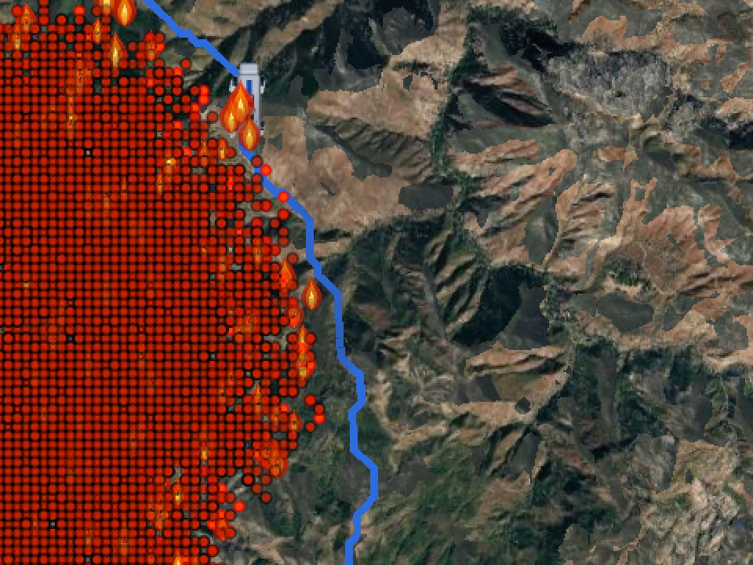
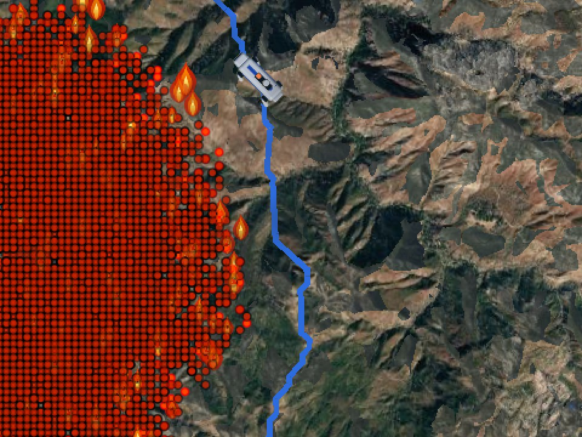

The edge of a wildfire is one of the most dangerous places for a firefighter.
Robot dogs (four-legged robots) can climb steep, rocky ground where trucks get stuck, and measure conditions on the ground under smoke and trees.
But a dog that steers by where the fire is now can walk into where it will be.


In the flames75 min in, the fire has reached the route.
Still clearSame moment: this route keeps 100 m from the predicted fire.
The dog plans to stay at least 100 m from where the fire is predicted to be, with 30 min in hand.
It scouts from the closest spot that keeps that distance and still has a way home. When its sensors show the real fire differs, the prediction reruns and the dog re-plans. If it is cut off, an emergency retreat may come closer.
Simulator screenshots, Big Sur: same fire, same start and target, 75 minutes after the dog sets out.
246,000 NASA satellite fire detections from 30 wildfires; weather, terrain, land cover
XGBoost gives each spot's chance of catching fire; the simulator spreads it with the wind
Every 50 m spot, in 15 min steps
Small and fast, so the dog can re-plan on the spot.
Model trained to predict whether a fire keeps spreading on 24 fires, tested on 6 others (AUC 0.75). The 50 m, 15 min spread is a simulation, not checked against real fires.
Reacting stays safe by staying back. Planning on the prediction reached a scout spot 91% of the time.
Each mission: walk from staging toward a target at the fire's edge, scout, come home. Reacting dogs aim for the target itself; the predicting dog scouts from the closest spot that keeps its 100 m rule (typically 50 m short of the target). Synthetic test on made-up terrain: the real fire runs hotter and drier than forecast, sometimes with a wind shift. Sensing is idealised: the dog's report gives the exact weather and the whole real fire. No physical robot.